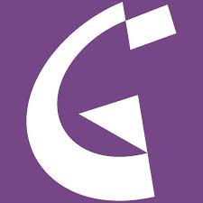
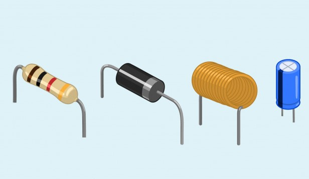

MOJA WEB STRANICA
O meni
Kontakt
Ovo je moj tekst. Ponekad je malo ukošen, a ponekad
podebljan. Poželim li to, mogu ga, primjerice, učiniti
istovremeno i podebljanim i ukošenim.
Volim gledati razne vrste filmova, ali ovi su mi žanrovi neki od najdražih.
- trileri
- akcijski filmovi
- dokumentarni filmovi
- ratni filmovi
- animirani filmovi
Ove knjige obavezno moram pročitati.
- Posljednji stipančići
- Mali Princ
- Životinjska farma
Škola za život
Danas je lijep dan, ali nažalost ne možemo u školu.


Informatika
Na informatici, preko virtualne učionice, sami istražujemo ljepote izrade
web stranica.
Raspored sati
Danas smo preko virualne učionice također učili i nešto o kemijskom računu
te ponavljali o linearnim jednadžbama preko računala
koristeći se web stranicama za reprodukciju videozapisa.
Učenje
Ovako je malo teško učiti, ali, što se mora, nije teško!
O internetu
Internet je nastao 1969. godine te je on globalna mreža prisutna svima.
Što je WWW?
WWW (World Wide Web) je jedna od usluga koje nudi internet.
Slap
Dobriša Cesarić
Teče i teče, teče jedan slap;
Što u njem znači moja mala kap?
Gle, jedna duga u vodi se stvara,
I sja i dršće u hiljadu šara.
Taj san u slapu da bi mogo sjati,
I moja kaplja pomaže ga tkati.
- Hardver
- Hardver ili sklopovlje su fizički, opipljivi dijelovi računala, npr. procesor, matična ploča...
- Softver
- Softver ili programska oprema računala su svi računalni programi na računalu.
- Operacijski sustav
- Skupina programa koji upravljaju cjelokupnim djelovanjem računala.
| Ime i prezime |
Rođen |
| Marko |
Zec |
1981. |
| Ivan |
Horvat |
1984. |
| Hrvoje |
1970. |
CERT


POVRATAK NA VRH